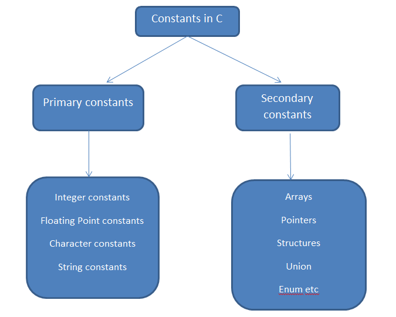
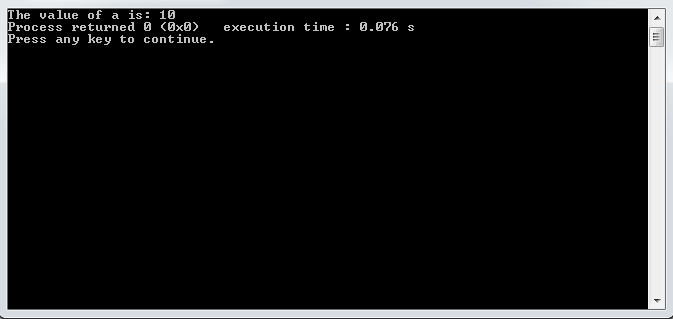
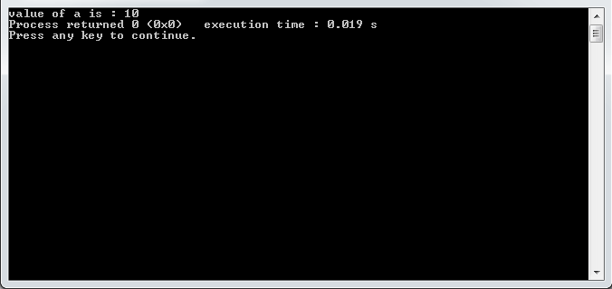

Constants in C
In C, constants are fixed values in the program that may not change during the execution, whereas a variable is an entity that may change during the execution. Constants are also called as ‘literals’. In this chapter we will discuss only constants, Variables are discussed in next chapter.
Types of C Constants
In C constants are divided into two types.
- Primary Constants
- Secondary Constants
These Primary and Secondary Constants are further categorized several sub types as shown below.
At this time we will discuss only the Primary Constants such as Integer constants, Floating-Point constants, Character constants.
Integer Constants
Integer constant is a numeric constant that may not associated with fractional or decimal point. Here we are providing some rules for creating Integer constants.
- An Integer constant must have at least one number.
- Integer constants must not have fractional part, decimal part or exponential part.
- You can use both positive ( +) or negative( -).
- If you not add any sign to an integer constant, the default sign is positive( +).
- Blank spaces, commas are not allowed within an integer constant.
Correct: 456
Wrong: 45.6
Correct: +567
Correct: -567
Wrong: 342 56
Wrong: 342,56
Here are some of the examples of Integer constants.
Floating Point Constants
A Floating point constant are also called as Real Constants. It can be written in fractional form and exponential form. Here are the rules for creating Floating Point constants.
- A Floating Point constant must have at least one number.
- Floating point constants must have a fractional point or exponential.
- You can use both positive ( +) or negative( -)
- If you not add any sign to an Floating Point constant, the default sign is positive( +).
- Blank spaces, commas are not allowed within an Float Point constant.
Correct: 567.32 //fractional
Correct: 4.1e8 //exponential
Wrong: 456
Correct: +567.34
Correct: -567.43
Wrong: 386 56
Wrong: 386,56
Here are some of the examples of Floating Point constants.
In Floating Point constants exponential form of representation is only used if the value is too small or too big. In exponential form the part appearing before ‘e’ is called “Mantissa” and after ‘e’ is called as “exponent”.
Here are some of the examples of exponential constants
Character Constants
- A Character constant must be a single digit or a single alphabet.
- It must be enclosed in single quotes ( ‘ ’).
- The length of a Character constant must be '1' character.
Here are some of the examples of Character constant.
String Constants
- A String Constant is set of character which are enclosed in double quotes ( “ ”).
- String constants contains characters that can be a digits, numbers or white spaces.
Here are some of the examples of String constants.
You can also break long line into multiple lines using string constant.
Defining Constants
You can define a constant in two ways.
- Const Keyword
- #define preprocessor
1. Using Const Keywords
You can use const keyword to define constants in C programs.
Syntax:const datatype identifier = value;
In the above example, const is keyword to defining a constant, int is a datatype, a is identifier and 10 is a value which is assigned to identifier ' a'. The value ‘ 10’ cannot be changed in the program.
The above program displays the following output.
If you want to change the value of ‘ a’, the program will result compile time error.
2. Using #define Preprocessor
You can use #define Preprocessor to define a constant in c programs. It doesn’t end with semicolon( ;), because #define preprocessor directive is just like #include.
Syntax:#define identifier Value
In the above example #define is a preprocessor directive to define a constant, a is a identifier and 10 is a value which is assigned to identifier ' a'.
The above program displays the following output.
Bottom Line: Note that constants are fixed values in C program that may not change during the execution of a program.